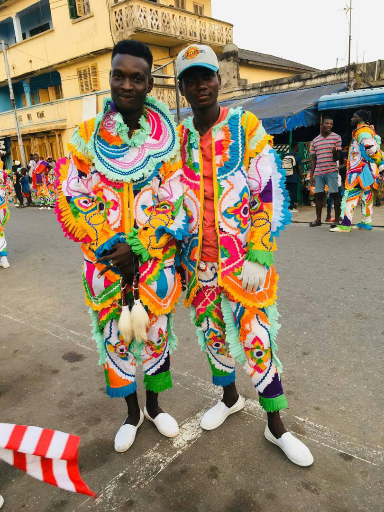

Oyhem is a masquerade group founded by ......... on .......
The Ankos Festival also known as Takoradi
street carnival or Masquerade Festival is an annual
event celebrated by the people of Takoradi, Ghana.
Its main attraction is dozens of groups of people or team
s dressing in wild outfits who display their skills and arts via dance.